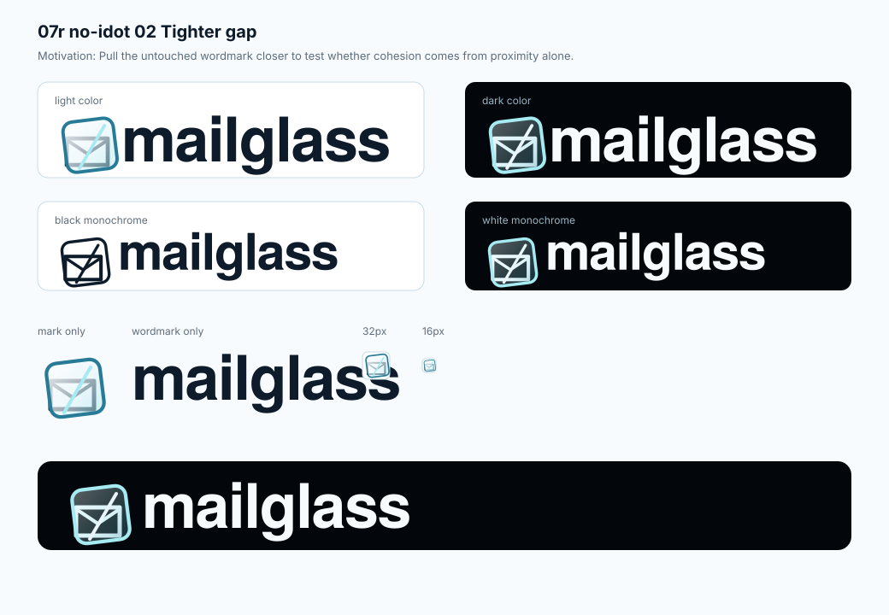
Selected. 07r no-idot 02 tighter gap
The preferred lockup: selected mark, tighter mark-to-wordmark proximity, and one untouched full wordmark.
selectedThe active identity is concept-07r-no-idot-02-tighter-gap.svg: existing mark, tighter proximity, and one untouched full mailglass wordmark. The other files on this board are archived comparisons.
mailglass text node.

The preferred lockup: selected mark, tighter mark-to-wordmark proximity, and one untouched full wordmark.
selected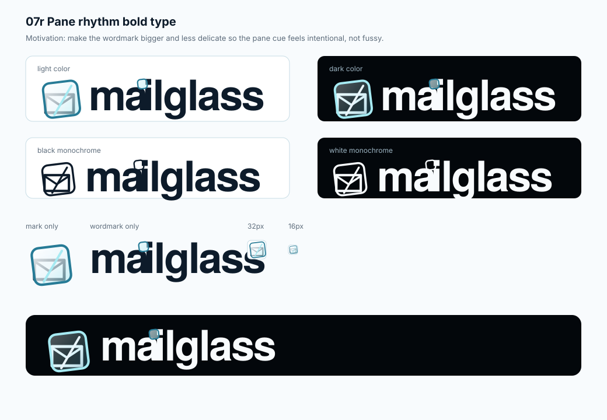
Useful only as scale history. Rejected for split text, cramped a-to-i spacing, and pane-over-i decoration.
do not extend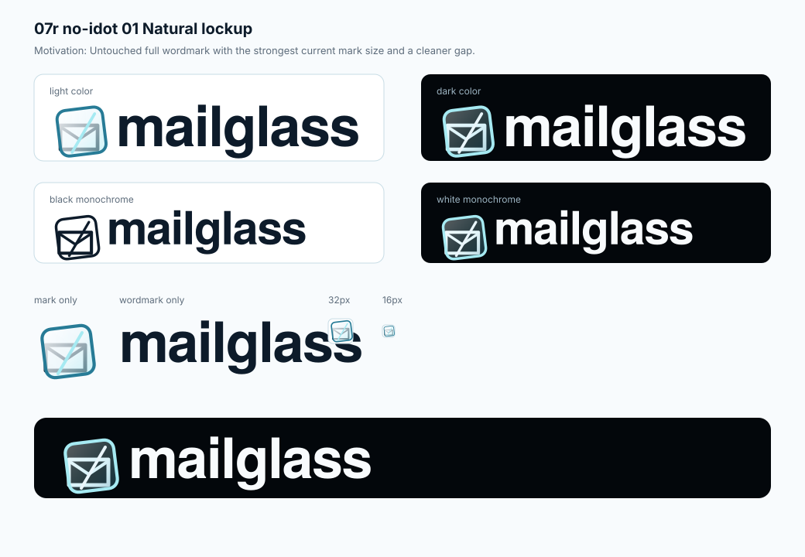
The clean control: full wordmark, current mark scale, and a calmer gap.
natural control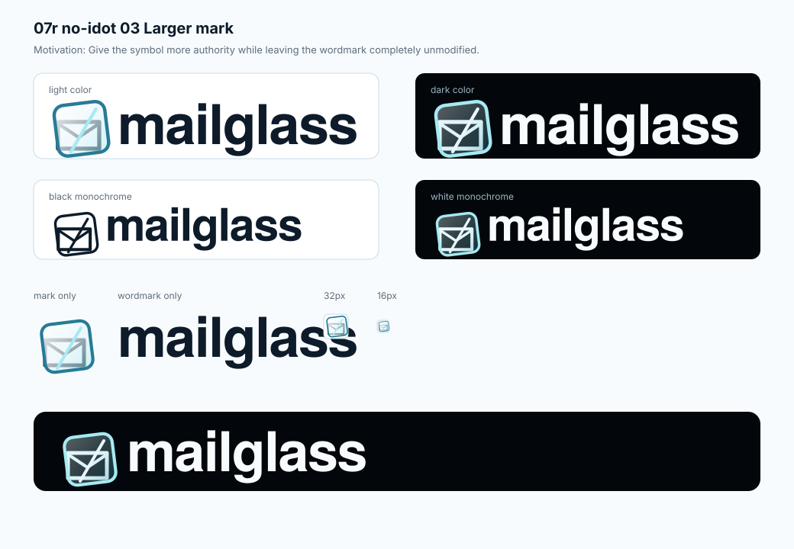
Gives the symbol more presence while keeping the name unmodified.
mark weight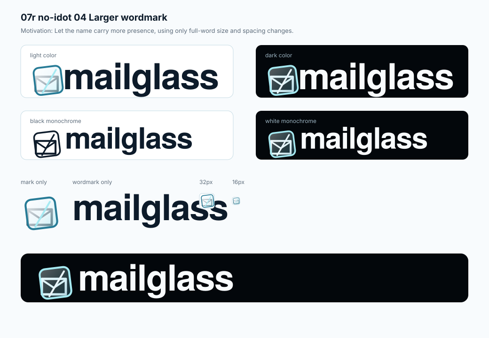
Lets the name lead through size and tracking only.
name-led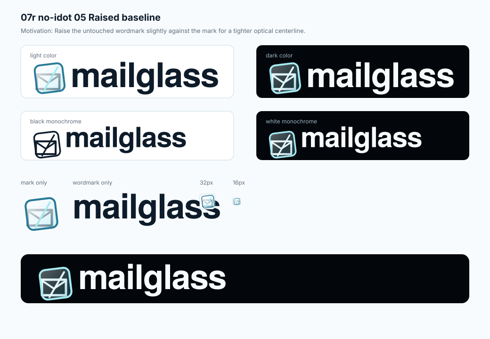
Raises the wordmark slightly to test a tighter optical centerline.
higher type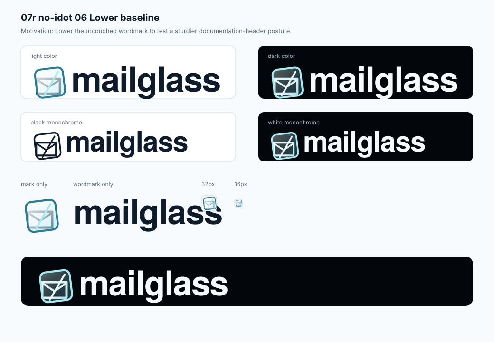
Lowers the wordmark slightly for a sturdier docs-header posture.
lower type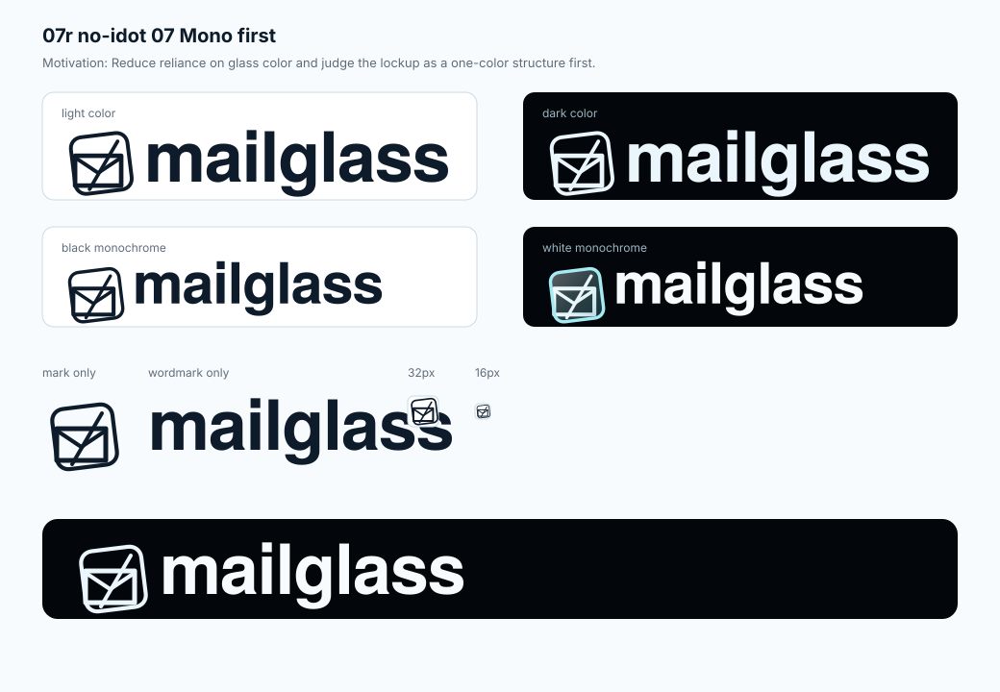
Reduces reliance on color and tests the logo as one-color structure.
structure test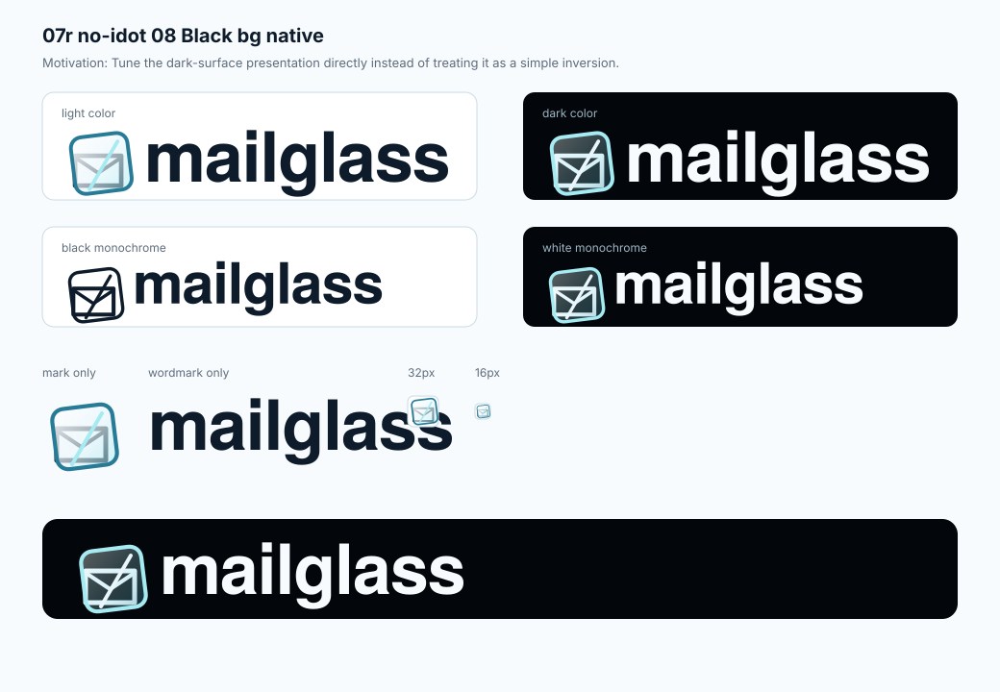
Tunes the black-background lockup directly instead of simply inverting it.
black surface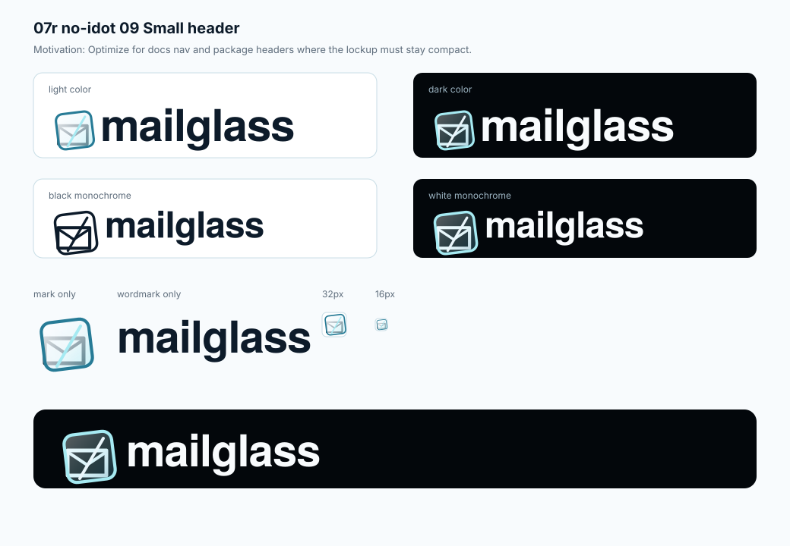
Optimizes the same untouched wordmark for compact docs and package headers.
header use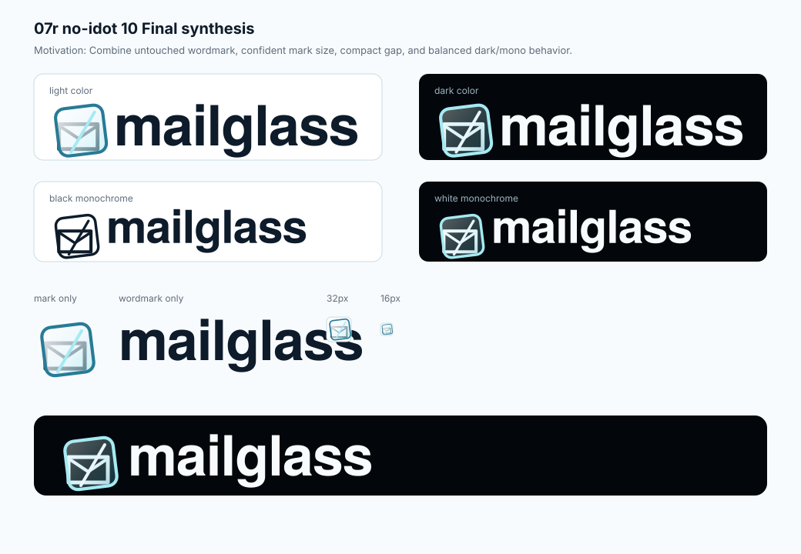
Archived comparison. Balanced, but the selected 02 gap reads as a more cohesive lockup.
not selected